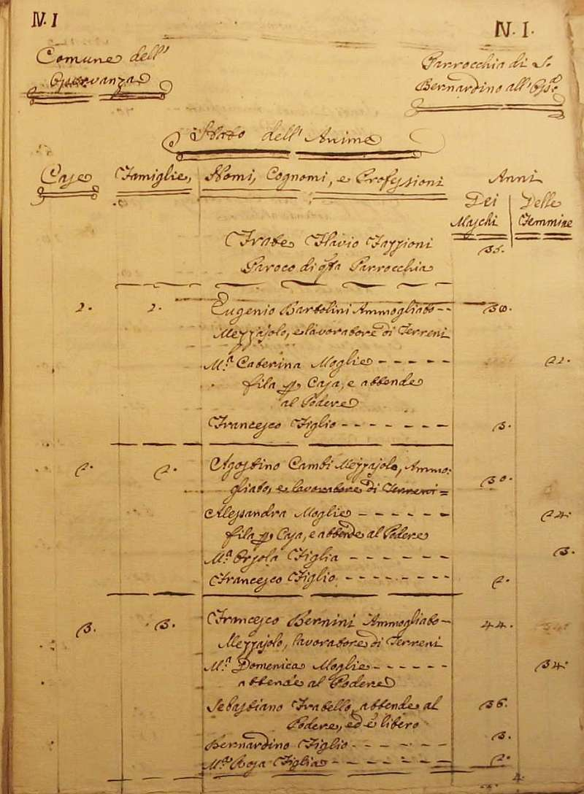
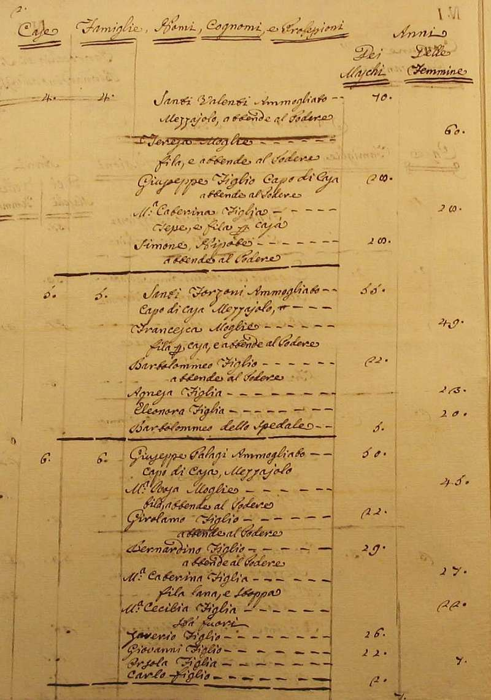
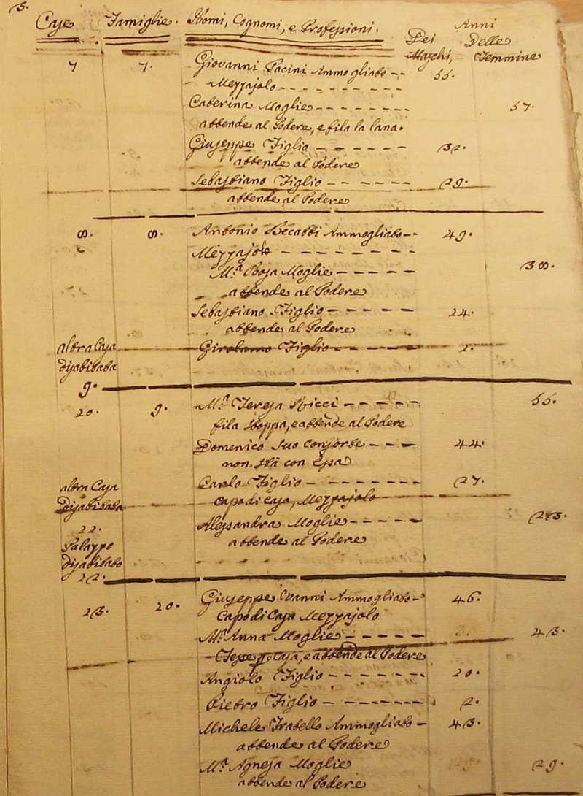
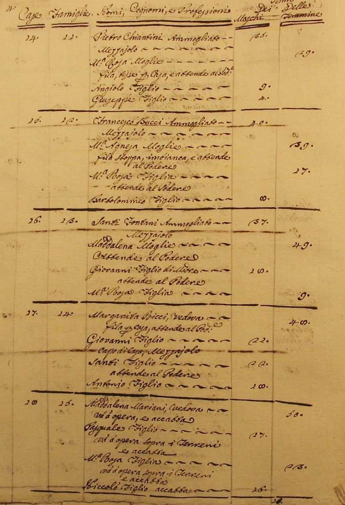
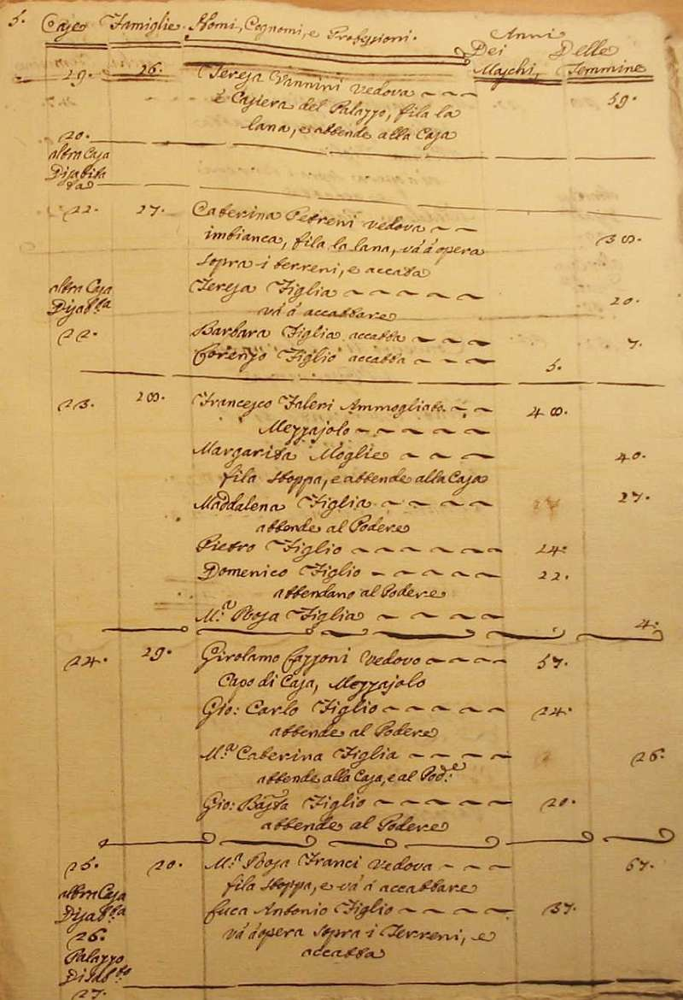
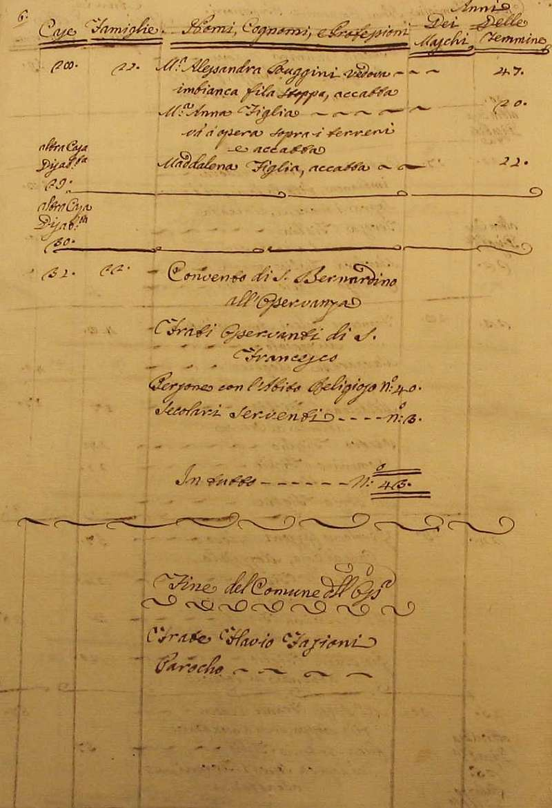

|
Ritorna all'indice delle parrocchie
Il numero abbinato ad ogni famiglia indica la relativa posizione nello Stato delle Anime
1 - Frate Flavio Fazzioni - Paroco di questa Parrocchia
1 - Bartolini Eugenio - mezzaiolo e lavoratore di terreni
2 - Cambi Agostino - mezzaiolo e lavoratore di terreni
3 - Bernini Francesco - mezzaiolo e lavoratore di terreni
4 - Valenti Santi - mezzaiolo attende al podere
5 - Forzoni Santi - mezzaiolo
6 - Palagi Giuseppe - mezzaiolo
7 - Pacini Giovanni - mezzaiolo
8 - Becatti Antonio - mezzaiolo
9 - Ricci Maria Teresa - fila stoppa e attende al podere
10 - Vanni Giuseppe - mezzaiolo
11 - Chiantini Pietro - mezzaiolo
12 - Bucci Francesco - mezzaiolo
13 - Fontani Santi - mezzaiolo
14 - Ricci Margarita - vedova - fila per casa attende al podere - 4
15 - Mariani Maddalena - va a opera e accatta - 4
16 - Vannini Teresa - vedova - casiera del palazzo fila la lana e attende alla casa
17 - Petreni Caterina - vedova - imbianca fila la lana e va a opera sopra i terreni e accatta
18 - Faleri Francesco - mezzaiolo
19 - Lazzoni Girolamo - mezzaiolo
20 - Franci Maria Rosa - vedova - fila stoppa e va a accattare - 2
21 - Ruggini Maria Alessandra - vedova - fila stoppa accatta - 3






Torna ad inizio pagina
Ritorna all'indice delle parrocchie
| |

|